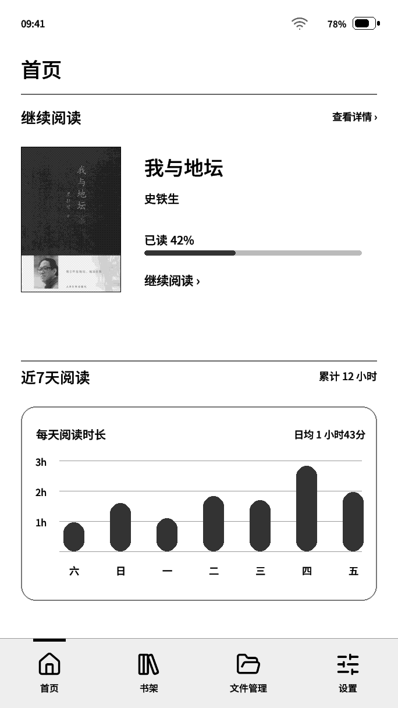
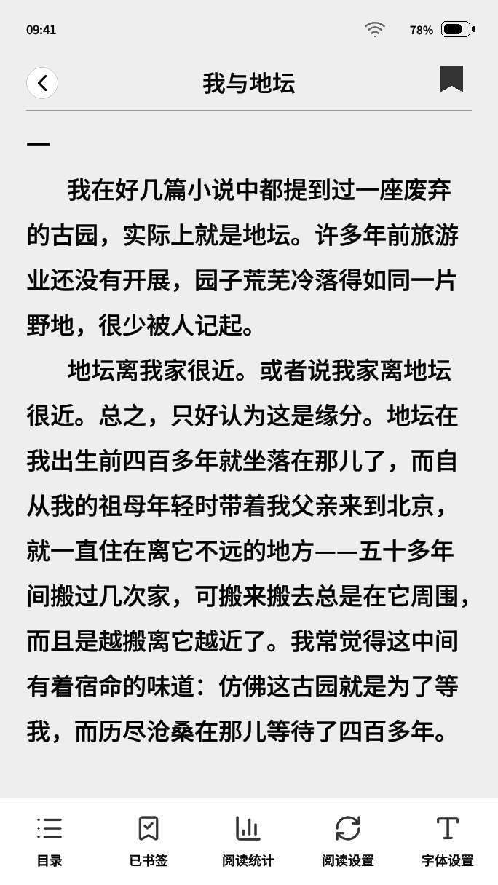

THE USER GUIDE
用起来，就顺手。
从第一次刷机，到传书、阅读与升级。
这份说明帮你找到每一步。
当前正式版 0.3.3-rc90 · 2026-10-09 · 适用墨水屏 RDP-G01-W
下载中文 PDF01 / GUIDE
从这里开始
为墨水屏打造的阅读界面，书架、阅读、文件与设置各有自己的位置。
本说明适用于官网当前正式固件。适用墨水屏型号为 RDP-G01-W；其他设备不要使用这套刷机包。固件不附带书籍或额外字体，可导入自己有权使用的文件。


第一次使用，三步就好
- 用可传数据的 USB 线连接电脑，在网页选择固件并安装。第一次安装优先使用完整网页刷机。
- 准备 FAT16 或 FAT32 格式的 TF 卡，导入 EPUB / TXT 书籍；字体可放入 fonts 文件夹。
- 在书架打开书籍，通过阅读工具栏调整字体、排版与操作方式。
网站中的界面与书籍为展示示意，刷新速度和残影表现以实机为准。
02 / GUIDE
网页刷机
第一次安装、修复系统或切换版本，用电脑完成。
开始前准备
使用电脑端 Chrome 或 Edge，通过 HTTPS 官网或本地预览地址打开刷机页。准备支持数据传输的 USB 线，并关闭占用设备串口的其他程序。手机浏览器通常不能完成网页刷机。
安装步骤
- 连接墨水屏。检查设备型号，并在刷机页选择最新正式版或指定历史版。
- 点击连接按钮，在浏览器的设备列表中选择对应 USB 串口。
- 按弹窗提示开始安装。正常安装保留数据，不要勾选「擦除设备」。
- 安装期间保持 USB 连接，等待提示完成和设备重新启动。
连接失败时
确认线材能传数据，换电脑 USB 接口，关闭其他刷机页和串口程序。在墨水屏打开「设置 → 升级和恢复 → BOOT 刷机」，进入 BOOT 模式后重试。设备无法进入系统时，可按住 BOOT 再连接并尝试安装；具体按键位置以设备为准。
完整网页包包含引导程序、分区表、应用及 OTA 数据。TF 卡应用 Bin 只用于升级，不要把它当完整包刷到地址 0。正常安装不会替你备份文件，重要数据仍建议先保存。
03 / GUIDE
传书与 TF 卡
WiFi、热点与 USB，选择现在最方便的一种。
先准备好文件
当前正式固件支持 FAT16 / FAT32，未启用 exFAT。容量本身不代表已验证兼容。书籍可放在 books 中并按目录整理；字体推荐放 fonts，图片推荐放 pictures。保留文件扩展名。
| 方式 | 操作 |
|---|---|
| WiFi 传输 | 文件管理 → WiFi 传输。让手机或电脑与墨水屏连接同一网络，打开屏幕上的地址或二维码。 |
| 热点传输 | 文件管理 → 热点传输。手机或电脑先连接墨水屏创建的热点，再打开传输地址。 |
| USB 传输 | 文件管理 → USB 传输。用数据线连接电脑，读写 TF 卡；完成后在电脑安全弹出，再退出传输。 |
网页端能做什么
浏览 TF 卡目录、导入书籍和字体、添加任意格式文件，并选择存放位置。网页里的「状态栏签名」可以保存或清空设备签名，重启后仍保留。系统升级 Bin 应放 TF 卡根目录。
传完之后
退出传输页面，回书架扫描或导入书籍。WiFi / 热点传输服务只在相应页面工作。进行 USB 传输时，TF 卡由电脑独占；不要同时在设备上打开卡内书籍。
文件管理只提供 WiFi、热点和 USB 传输。TF 卡读取失败时先检查电脑能否正常读写，不要未经备份就格式化。
04 / GUIDE
阅读与按键
把翻页和工具栏，放在自己顺手的位置。
| 默认操作 | 功能 |
|---|---|
| 左键短按 | 上一页 |
| 中键短按 | 阅读工具栏：字体、目录、书签、阅读设置等 |
| 右键短按 | 下一页 |
| 中键长按 | 手动全刷，清理当前阅读画面残影 |
自定义按键
进入「阅读设置 → 按键控制」设置三键短按及中键长按。推荐设置 1 为上一页 / 工具栏 / 下一页；推荐设置 2 为首页 / 切换全屏 / 工具栏。中键长按也可设为返回首页等操作。四种操作至少保留一个工具栏入口；旧配置缺少入口时，系统自动把中键短按设为工具栏。
轻点、滑动与全屏
左右翻页：左右各半；上下翻页：上三分之一上一页，下三分之二下一页。左右滑动翻页兼容两种轻点模式。双击屏幕中间区域切换全屏，独立于按键和翻页设置。新开书默认全屏；在非全屏或工具栏打开时翻页，会收起工具栏并回到全屏。
书签、收藏与目录
书签记录当前阅读位置；收藏把书放在书架前面，并在封面显示标记。通过工具栏打开目录跳转章节，或调整阅读进度。目录结构及插图效果受 EPUB 本身结构影响。
蓝牙翻页器在系统设置中配置。扫描、配对后，可用按键映射学习上一页和下一页；识别成功会显示反馈。只使用有广播名称的设备，传输或升级期间蓝牙可能暂停以释放内存。
05 / GUIDE
书架、字体与个性化
书是自己的，阅读方式也是。
整理书架
收藏书籍优先显示，再按选定的排序规则排列。可按最近阅读查找书籍；底部页码两侧的箭头切换书架页。管理页面可以选择书籍进行整理，删除文件前确认选择。移出书架与删除 TF 卡文件是不同操作，以当前确认提示为准。
导入字体与排版
将兼容字体文件放入 TF 卡 fonts 文件夹，再在系统或阅读字体选择中应用。首页继续阅读标题跟随系统字体；阅读题头和章节标题跟随阅读字体。阅读样式统一用于各本书，可调整字号、行距、缩进和边距。系统字号可设置到 200%。
资料卡与签名
在设置的资料卡中修改名字或头像。状态栏个性签名也可从 WiFi / 热点传输网页设置。名字、签名和已选路径会随设备配置保存；头像文件仍要保留在 TF 卡上。
选择刷新方式
| 主页模式 | 显示特点 |
|---|---|
| 普通 | 保留灰阶，优先完整显示。 |
| 快刷 | 主内容使用黑白与细腻棋盘格点阵，强调切换响应。 |
| 水波纹 | 保留灰阶，以条带推进完成页面切换。 |
主页模式影响首页、书架、文件和设置之间的切换。阅读设置另有翻页效果、自动全刷间隔、手动全刷、电源键翻页及关闭书内图片等选项。快刷与灰阶效果都有残影取舍，必要时手动全刷。
06 / GUIDE
升级、备份与恢复
先留住数据，再安心更新。
TF 卡升级
- 从官网选择版本并下载应用 Bin，保持文件名 Pico-update.bin。
- 将文件放到 TF 卡根目录，不放进 books，也不要留成带版本号的文件名。
- 打开「设置 → 升级和恢复 → 系统升级 → TF 卡升级」，确认目标版本。
- 保持供电，不拔卡，等待校验、写入和重新启动。
rc72 及以上的兼容双槽基础包支持该 TF 升级路径；更早版本或其他固件先网页完整刷机。TF 升级不接受同版本镜像；可以安装兼容旧版，但旧版不一定能读取新版的全部设置。升级包不用于更换引导程序或分区布局。
联网 OTA
在支持联网 OTA 的基础版（rc79 及以后）连接 WiFi，从系统升级检查更新，阅读版本和日志后确认下载安装。安装期间保持连接及供电；进度条持续增长，墨水屏不会像手机一样逐帧更新。新版本校验通过后才切换启动槽。
保存与恢复配置
在「升级和恢复」保存配置，TF 卡根目录生成 Pico-settings.backup。备份包含可选设置、字体与阅读设置、进度、阅读时长、书签、收藏、资料卡、签名和网络设置。恢复时使用同一备份文件，并保留原书籍、字体和图片文件；路径变化可能导致记录无法对应。
配置备份不包含书籍、字体、头像或壁纸本体。备份含网络凭据，请妥善保存，不要公开分享。跨版本恢复前保留原备份；锁屏密码不通过普通备份复制。
07 / GUIDE
常见问题
遇到问题，先从这里查。
找不到 USB 设备 / 初始化失败
检查浏览器、数据线、USB 接口与串口占用。进入 BOOT 模式后重试，不要把普通运行串口误认为已经进入刷写状态。刷机完成后退出安装弹窗，等待设备重启。
TF 卡不识别 / ESP_ERR_INVALID_STATE
先确认电脑能正常读写、分区是 FAT16 / FAT32，重新插卡并重试挂载。此错误也可能是初始化状态问题，不等于文件系统已损坏。大容量卡兼容性不能只按容量判断；不要在没有备份时格式化。
书籍打不开 / 开机进入恢复提示
复杂 EPUB、大尺寸图片或损坏文件可能超出设备资源。异常开书后，启动保护会进入可操作页面并提示相关书籍；可自主移除问题文件，避免不断重试。重要书籍先备份，删除需确认。
网络传输或升级失败
确认 2.4 GHz WiFi、设备与手机在同一网络；热点传输要先加入墨水屏热点。网页不可用时重新查看设备地址。OTA 要能访问更新服务器；换稳定网络重试，保持供电。
有残影、字体不完整或插图无法显示
先手动全刷；残影多可缩短阅读全刷间隔。字体缺字可换更完整的字体。检查是否开启关闭书内图片；部分插图格式或尺寸可能不支持，保留原文件并换兼容版本测试。
反馈时请提供固件版本、所在页面、复现步骤、屏幕提示，以及必要的书籍或图片样例。不要公开 WiFi 密码或包含凭据的配置备份。